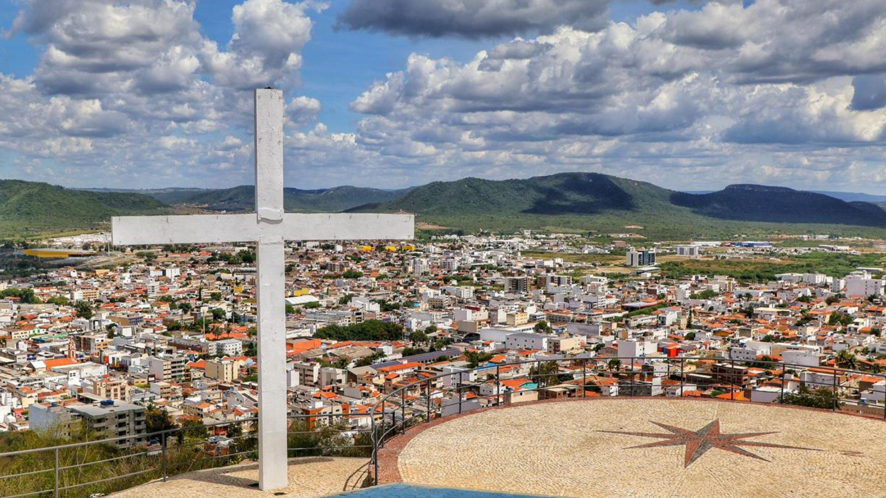
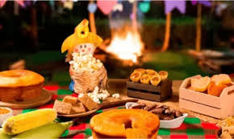

O Melhor São João do Interior
O maior evento cultural do Sertão
Confira os shows do evento

Pontos turísticos da cidade

Sabores do Nordeste
🕘 21:00
📍 Polo Multicultural
A cidade de Arcoverde é conhecida por ser o Portal do Sertão e o Berço do Xaxado.